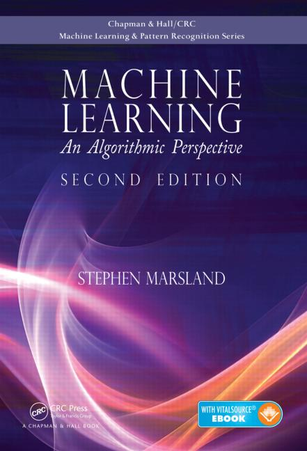

|  |
DescriptionThe title is kind of explanatory, right? If you want the complete introduction to machine learning for beginners, this might be a good place to start. When Theobald says “absolute beginners,” he absolutely means it. No mathematical background is needed, nor coding experience — this is the most basic introduction to the topic for anyone interested in machine learning. It presents the programming languages and tools integral to machine learning and illustrates how to turn seemingly-esoteric machine learning into something practical. “Plain” language is highly valued here to prevent beginners from being overwhelmed by technical jargon. Clear, accessible explanations and visual examples accompany the various algorithms to make sure things are easy to follow. Some simple programming is also introduced to put machine learning in context. |